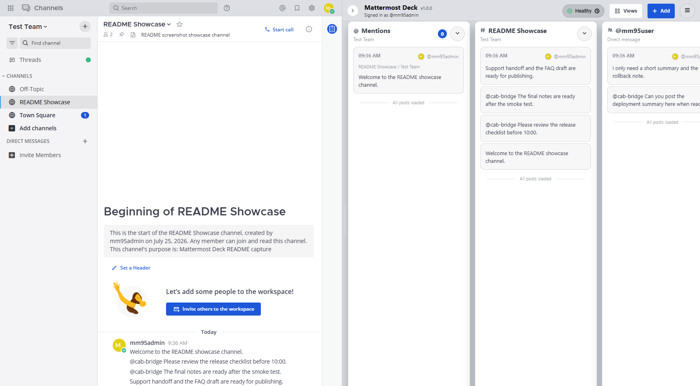
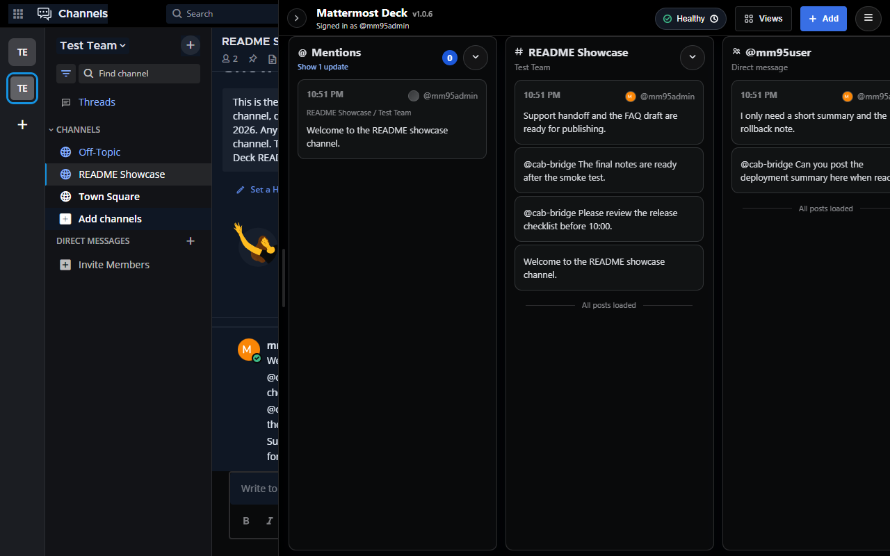

メンションを集約
参加チーム・チャンネルのメンションを集約し、カスタムキー、特別／グループメンション、DM／GM、CRT／非CRTの返信をMattermost設定に沿って判定します。
メンション、重要チャンネル、DM、検索結果、保存済み投稿を右側のDeckに並べるChrome拡張。 投稿や編集、スレッド操作は、いつものMattermostで。
A Chrome extension that lines up mentions, important channels, DMs, search results, and saved posts in a right-side Deck. Keep posting, editing, and working with threads in Mattermost itself.

Mattermost Deckは、会話を別の場所へ移しません。必要な一覧だけを補助ペインとして右側に並べ、 Mattermost本体での投稿・編集・ナビゲーションを維持します。
Mattermost Deck does not move conversations into another service. It adds focused lists beside Mattermost while preserving Mattermost for posting, editing, navigation, and threads.
参加チーム・チャンネルのメンションを集約し、カスタムキー、特別／グループメンション、DM／GM、CRT／非CRTの返信をMattermost設定に沿って判定します。
チャンネル、DM、グループメッセージを別々のペインとして常時表示できます。
検索結果を保存して追跡し、指定語や特別メンションを視覚的に強調します。
あとで読むために保存した投稿を、現在の作業を離れずに参照できます。
ペインセットをViewsとして保存し、同じサーバーでも運用やサポート用に設定を切り替えられます。
接続状態、API集計、最近のトレースを確認し、必要ならJSONLで書き出せます。
拡張機能は設定したMattermostサーバーだけで有効になり、 現在のブラウザセッションを使って必要な情報を取得します。
The extension activates only on the Mattermost server you configure and uses the current browser session to retrieve the information it displays.

Chrome ウェブストアからインストールすると、設定画面が開きます。
接続先のMattermost URLを入力し、そのoriginへのChrome権限を許可します。
Mattermostを開き、右側のDeckに監視したい会話や検索を並べます。
監視対象を固定しながら、Mattermost本体では通常どおり会話を続けられます。
アラート用チャンネル、担当者DM、検索結果を並べ、状況の変化を見渡します。
問い合わせ、エスカレーション、保存済みメモを同時に確認し、引き継ぎを短くします。
チームのMattermost構成を変えず、必要な情報だけを自分のブラウザで整理します。
Mattermost連動テーマ、ライト／ダーク表示、コンパクト表示、ペイン識別カラーを調整できます。 画像を選択すると拡大表示します。
Tune Mattermost-aware colors, light or dark presentation, compact rows, and pane identity accents. Select an image to enlarge it.
Mattermostの明るい配色に合わせた表示。
暗いワークスペースでも境界と情報階層を維持。
日本語、英語、ドイツ語、フランス語、簡体字中国語。
Mattermost Deckは、ユーザーが明示的に設定して許可したMattermostサーバーとだけ通信します。 開発者のサーバーへのユーザーデータ送信や、第三者分析・広告トラッキングはありません。
Mattermost Deck communicates only with the Mattermost server that the user explicitly configures and permits. It does not send user data to developer-operated servers and includes no third-party analytics or advertising trackers.
プライバシーポリシーTeam Slug、PAT、テーマ、幅、プロファイルは必要なときだけ追加設定できます。
Chrome ウェブストアからMattermost Deckを追加します。
Mattermost Server URLを保存し、表示されたorigin権限を許可します。
右側にDeckが表示されたら、＋ボタンからペインを追加します。
詳細な不具合報告や機能要望はGitHub Issuesで受け付けています。
いいえ。Mattermost本体をログイン、投稿、編集、ナビゲーション、スレッド操作の中心に保ち、監視用の補助ワークスペースだけを追加します。
ブラウザからMattermost Webと必要なAPIへアクセスできれば利用できます。グループメンションなど一部機能は、サーバーのライセンス・設定・権限で利用可能な場合に限られます。
必須ではありません。PATなしでは定期的なREST取得を使い、PATを設定した場合はWebSocketによるリアルタイム更新を利用できます。
いいえ。Optionsで保存し、Chromeのorigin権限を許可したMattermostサーバーだけで有効になります。リモートサーバーにはHTTPSが必要です。
送られません。拡張機能は設定済みのMattermostサーバーと通信し、開発者運営サーバーへのユーザーデータ送信や第三者テレメトリを行いません。
Mattermostの作業領域を優先してDeckの実効幅を調整します。スレッドペイン表示中は必要に応じてDeckを縮小または折り畳み、スレッドを閉じるかウィンドウを再び広げると指定した幅とスクロール位置へ戻します。
Google Chrome 120以降が必要です。Docker E2EではMattermost 9.5.4と9.5.11を検証済みで、リリースゲートは既定の9.5.4で実行します。より新しいMattermostやその他のChromiumベースブラウザーは、すべての版をリリースゲートで検証しているわけではありません。